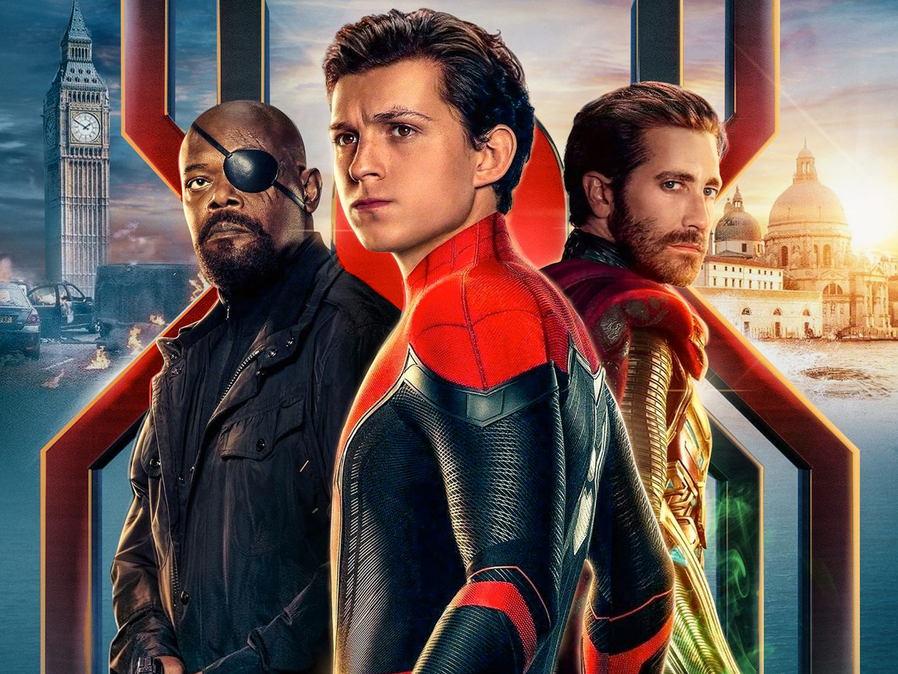

'Spider-Man: Far From Home': la idea de recrear el icónico meme del hombre araña surgió de Andrew Garfield
Marvel ha compartido una fotografía donde podemos ver a los tres actores de 'Spider-Man: Far From Home',Tom Holland, Tobey Maguire, y Andrew Garfield recreando el famoso meme del hombre araña que lleva siendo viral muchos meses, donde ahora son tres superhéroes los que se están señalando, como si no se conocieran, un momento que se pudo ver, de forma más sutil en la propia película.
El meme, que viene, cuya imagen proviene del episodio delos dibujos animados de spider-man de 1967, 'doble identidad', en el que un villano intenta hacerse pasar por héroe se ha compartido de nuevo para anunciar la venta de formatos domésticos y aparición en digital de la paelícula el 22 de marzo con una imagen especial de los actores durante el rodaje, entre otros momoentos detrás de las cámaras como Tobey Maguire imitando algunos pasos prohibidos de su infame baile en 'Spider-Man 3'